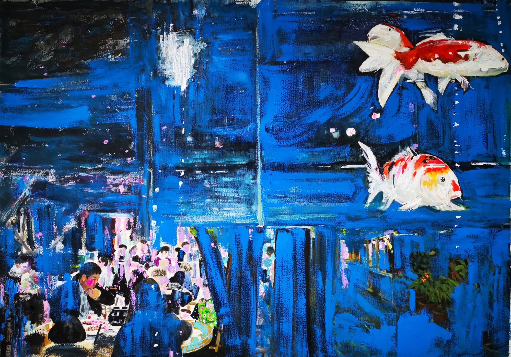

A Pool of Human Life
一池人间

- Artwork ID / 作品编号
- KW-G-000001
- Year / 年份
- 2025
- Medium / 媒介
- Gouache on paper / 纸本水粉
- Dimensions / 尺寸
- 72 × 103 cm (H × W / 高 × 宽)
About the work / 作品介绍
Ripples of Coexistence is inspired by a real restaurant and its ornamental koi pond. By reorganizing spatial relationships, the work places people, water, koi, light, and architecture within a single flowing environment. While employing a surreal visual language, the painting remains rooted in the relationship between humanity and nature. People gather naturally as koi swim freely, sharing a peaceful space without conflict. The work expresses a gentle vision of coexistence in which different forms of life inhabit the same world with mutual respect.
《一池人间》以现实中的餐厅与观赏鱼缸为原型，通过空间关系的重新组织，让人、水、锦鲤、光线与建筑共同存在于同一个流动的场域。作品借用了超现实的视觉语言，但关注的始终是真实世界中人与自然的关系。人们自在相聚，锦鲤悠然游动，彼此互不侵扰，在同一空间中共享宁静与温暖。画面希望呈现一种柔性的生命状态：人与万物可以相互尊重、共同栖居，而不是彼此对立。